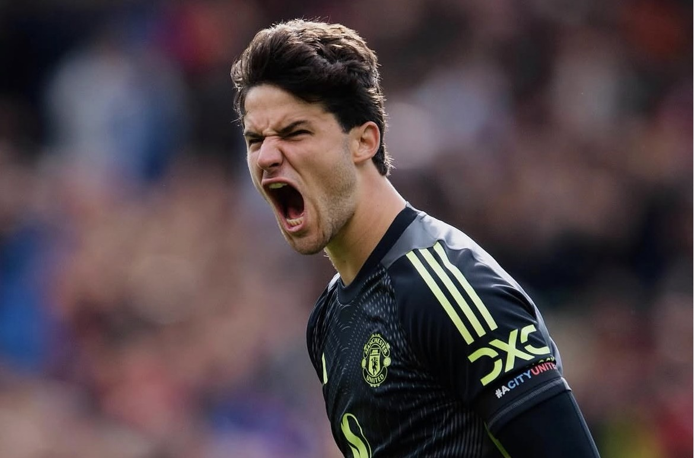
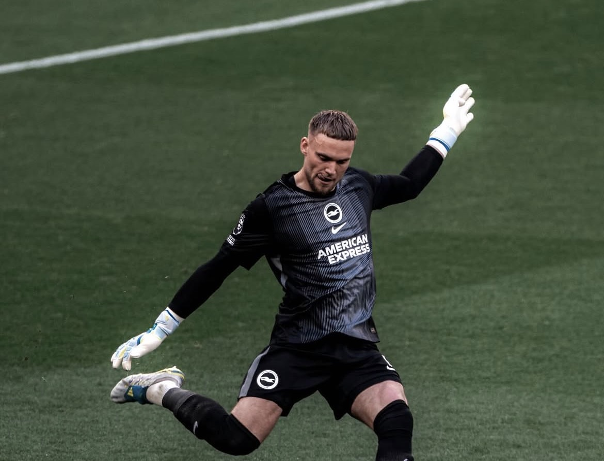
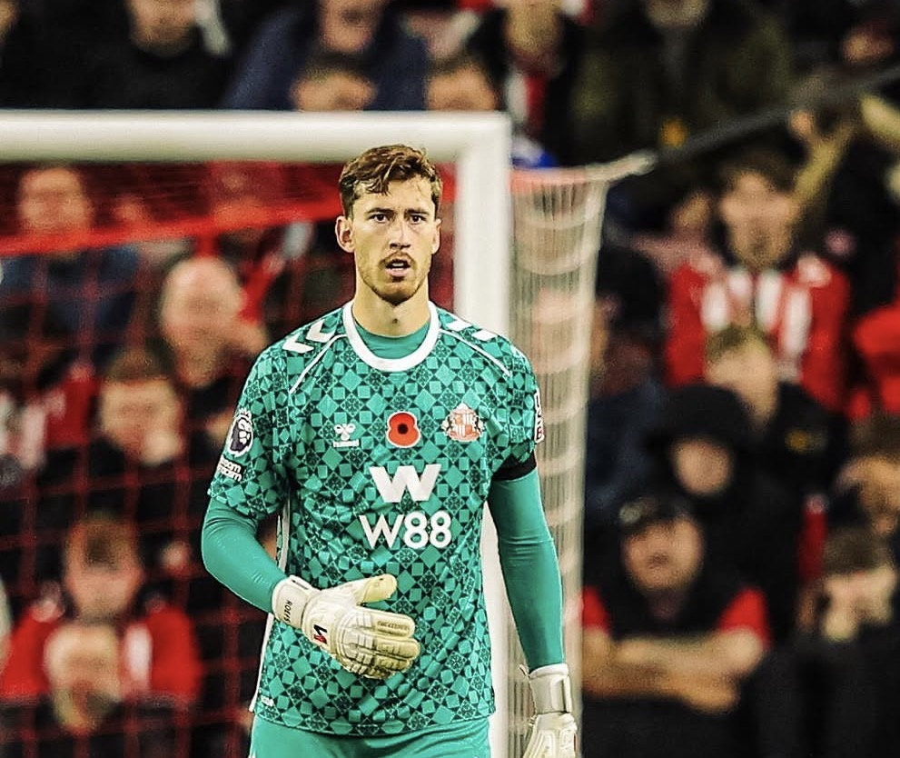

GKSenne Lammens
所属: Manchester United / 身長: 193cm
マンチェスター・ユナイテッドに所属するベルギー代表GK。193cmの巨体を生かしたセービングが武器で、移籍後に定位置を確保。2026年W杯メンバーにも選出された、世界が注目する若き大型守護神。
次世代を担うPLの至宝たち

GK所属: Manchester United / 身長: 193cm
マンチェスター・ユナイテッドに所属するベルギー代表GK。193cmの巨体を生かしたセービングが武器で、移籍後に定位置を確保。2026年W杯メンバーにも選出された、世界が注目する若き大型守護神。

GK所属: Brighton&Hove Albion/ 身長: 193cm
プレミアリーグのブライトンに所属するオランダ代表GK。193cmの体格を活かしたシュートセーブに加え、フィールドプレーヤー並みの高い足元の技術が武器。若くして代表の正守護神を掴んだ、新時代の大型守護神。

GK所属: Sunderland/ 身長: 193cm
プレミアリーグのサンダーランドに所属するオランダ世代別代表GK。193cmの大型守護神で、高いセービング力に加えPK戦で見せた圧巻のストップ能力が武器。イングランドで評価を高める新星ゴールキーパー。